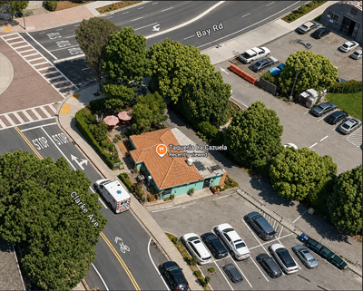

Ofelia Bello is a first-generation graduate, housing advocate, and lifelong East Palo Alto resident who has spent the last decade fighting for the people who built this city.
"I will always keep in mind what is best for ordinary and working-class people in EPA — not what suits corporate or individual interests."
I'm a 33-year-old Latina professional, proudly born and raised in East Palo Alto. As a first-generation college graduate with a master's degree in Urban Affairs and Public Policy, I've dedicated the last ten years to volunteering with local organizations — advocating for affordable housing, fighting for renters' rights, promoting equitable community development, and working to create a safer, healthier community for all.
Professionally, I led a local, grassroots nonprofit organization focused on social, environmental, and racial justice for six years. Currently, I'm executive director of Pahali Community Land Trust.
I also served five years on the East Palo Alto Planning Commission, where I was vice-chair and a consistent, strong voice for equitable development that prioritizes our residents' needs and respects our city's vision. In 2022, voters elected me to the East Palo Alto Sanitary District, where I've vocally advocated for transparent and efficient governance that prioritizes our ratepayers.
The residents of EPA will be at the forefront of my decisions. Please vote for me, Ofelia Bello, to faithfully serve our community's interests.
A platform built on ten years of organizing alongside EPA residents — not around them.
Protecting the residents who make EPA home and expanding housing that working families can actually afford.
Growth that respects the city's vision and prioritizes the needs of residents over corporate interests.
Efficient, transparent governance that puts ratepayers and residents first — not politics as usual.
Continuing the grassroots fight for a healthier, more just East Palo Alto for every community.
Building a community where every resident — not just some — can feel safe, supported, and heard.
Every decision measured against one question: what's best for ordinary, working-class EPA families?
Ofelia's leadership in East Palo Alto didn't start with this campaign.
Led a local organization focused on social, environmental, and racial justice for the East Palo Alto community.
A consistent, strong voice for equitable development that prioritizes residents' needs and respects the city's vision.
Advocated for transparent and efficient governance that prioritizes ratepayers.
Continuing the work of equitable housing and community ownership in East Palo Alto.
Come meet Ofelia and hear her vision for East Palo Alto.

Campaigns like this run on neighbors, not corporate donors.
Knock doors, phone bank, or help out at the kickoff and future events.
Sign up to volunteer →Grassroots campaigns are funded by residents like you, not corporate PACs.
Donate to the campaign →Follow along and share the campaign with friends and neighbors in EPA.
Follow @ofelia_4epa →